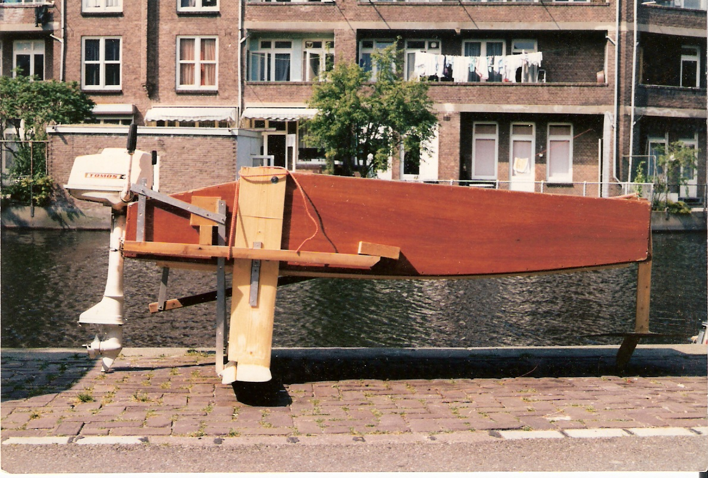
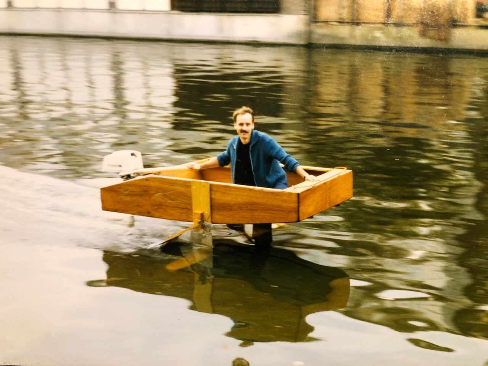

Around 1985 I attended a local publicity lecture from someone planning to build his own ocean going hydrofoil. He wanted to win the "Blue Riband" for the fastest transatlantic crossing by a passenger liner, so he needed at least one paying passenger. He had crossed the ocean before in a raft with a truck cabin on top and he felt that he was now ready for the next step, a 1,000 hp racing craft.
He had a friend helping him who had some doubts. This friend asked me if I would have a look at the design. We felt that it might be wise to build a smaller prototype first, but the adventurer would have none of it. So we decided to do it ourselves.
Since I did not like the spray and resistance of surface piercing foils, the wing was a fully submerged wooden plank, sanded to a Clark-Y type section. The "hull" was a lightweight plywood box. My friend had a small outboard motor lying around. Depth and roll control was by two wooden feelers planing on the water, mechanically connected to piano-hinged strip ailerons. The control was rock solid : one could lean outboard over the edge and the craft would not roll.
The picture shows the first version, which had a nose skid to keep the nose at a fixed height above the water.

The second version dispensed with the nose skid. It had a horizontal stabilizer fixed to the antiventilation plate. With the clean bow flying above the surface, this gave less spray and a decidely more racy appearance. The second picture shows this version in full flight.

The craft left the water within a few lengths, and cruised at bicycle speeds. Unfortunately, it would not leave the water with two people on board. I ran circles around expensive motor yachts on the IJ river of Amsterdam with this version, cutting squarely through their bow and stern waves. After hitting the square nose of the box on a particularly big stern wave, even though there was no damage, the main take home lesson was that I really needed to learn how to swim.
The adventurer barely got his 1,000 hp craft out of the water. He never gained the Blue Riband.